Các phương pháp gradient chính sách nâng cao Tỷ số, độ cong, replay, entropy và học phân tán Bài 11 · Học tăng cường · Học kỳ 1, 2026–2027
Bài trước đã xây ước lượng lợi thế tổng quát (GAE), tối ưu chính sách miền tin cậy (TRPO) và tối ưu chính sách gần (PPO). Bài này thay từng thành phần trong hợp đồng đó: mục tiêu tỷ số, hình học cập nhật, nguồn dữ liệu, critic, chính sách hành vi và kiến trúc phân tán.Nguồn: lecture11_part3.pdf, tr. 4–77; tr. 4–43 chỉ dùng làm tiên quyết.
Hai mức kết quả học tập Tính và viết được Target/gradient của A3C và so sánh A2C. Hợp đồng DDPG/MADDPG. Objective/target của SAC và TD3. Nhận dạng và giới hạn SPO, SAM, D4PG, ACER, ACKTR, SVPG, IMPALA và PPG qua cơ chế, dữ liệu và phạm vi.
Ba dữ kiện mang từ PPO sang Tỷ số $w_t=\pi_\theta(A_t\mid S_t)/\pi_{\mathrm{old}}(A_t\mid S_t)$.
Dấu lợi thế $\widehat A_t>0$: tăng xác suất; $\widehat A_t<0$: giảm xác suất.
Batch cũ Giữ $\log\pi_{\mathrm{old}}$, lợi thế và target cố định trong các epoch.
Clipping có thể tắt gradient theo mẫu Khi thay đổi thuận lợi vượt biên clip, mẫu đó có thể ngừng tạo gradient policy.
$$\ell_t^{\mathrm{PPO}}=\min\!\left(w_t\widehat A_t,\operatorname{clip}(w_t,1-\epsilon,1+\epsilon)\widehat A_t\right).$$
Tối ưu chính sách đơn giản (Simple Policy Optimization, SPO) thay đoạn phẳng bằng penalty trên tỷ số.
Penalty kéo tỷ số về biên có lợi 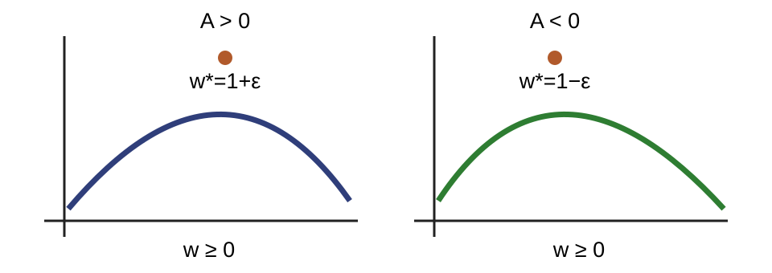
$A>0$ Tăng xác suất, nhưng lực kéo đổi dấu sau $1+\epsilon$.
$A<0$ Giảm xác suất, nhưng lực kéo đổi dấu trước $1-\epsilon$.
Hai số đặt tỷ số ở hai phía Cho $\epsilon=0{,}2$.
$A=2$ Tỷ số đích $w^*=1{,}2$.
$f(1{,}2,2)=2{,}2$
$A=-2$ Tỷ số đích $w^*=0{,}8$.
$f(0{,}8,-2)=-1{,}8$
SPO thay policy loss, không thay pipeline $$f(w,A)=wA-\frac{|A|}{2\epsilon}(w-1)^2,\quad \frac{\partial f}{\partial w}=A-\frac{|A|}{\epsilon}(w-1),\quad w\ge0.$$
$A\ne0$ $w^*=1+\operatorname{sign}(A)\epsilon$; đạo hàm bậc hai âm.
$A=0$ $f(w,0)=0$ với mọi $w$; nghiệm không duy nhất.
Giữ batch cũ, critic, lợi thế và pipeline PPO; chỉ thay hạng policy loss.
Đỉnh sắc nhạy với nhiễu tham số 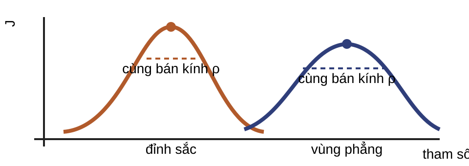
Hai tham số có return danh nghĩa gần nhau nhưng giá trị xấu nhất trong cùng bán kính có thể khác nhau.
Tối thiểu hóa nhận biết độ sắc (Sharpness-Aware Minimization, SAM) ưu tiên vùng giữ return khi tham số bị nhiễu.
Một gradient cho nhiễu $(-0{,}06,-0{,}08)$ Cho $g=(3,4)$ và $\rho=0{,}1$.
$$\|g\|_2=5,\qquad \xi_{\mathrm{adv}}=-0{,}1(3/5,4/5)=(-0{,}06,-0{,}08).$$
Nhiễu đối nghịch đi ngược gradient reward; gradient cập nhật được đánh giá tại $\theta+\xi_{\mathrm{adv}}$.
SAM giải gần đúng bài toán max–min $$\max_\theta\ \min_{\|\xi\|_2\le\rho}J(\theta+\xi),\qquad \xi_{\mathrm{adv}}=-\rho\frac{g}{\|g\|_2},\quad g=\nabla_\theta J(\theta).$$
Tính $g$ tại $\theta$. Tạo $\xi_{\mathrm{adv}}$ theo phía làm giảm reward. Xem $\xi_{\mathrm{adv}}$ là cố định và cập nhật bằng $\nabla_\theta J(\theta+\xi_{\mathrm{adv}})$. Nhiễu tham số chỉ cho độ nhạy hành động thuận 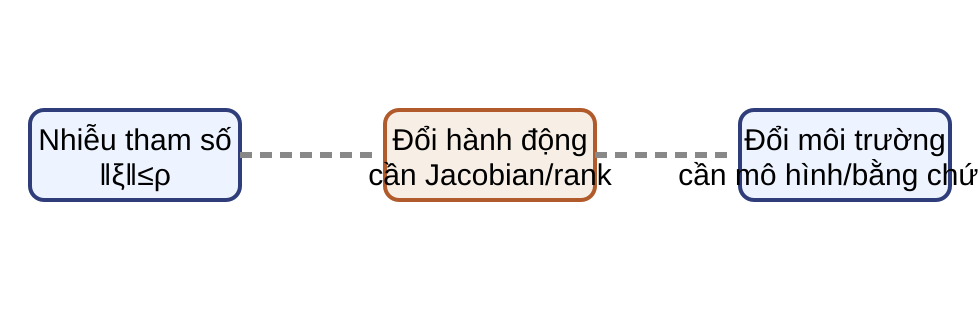
$$\|\mu_{\theta+\xi}(s)-\mu_\theta(s)\|\ \lesssim\ \|D_\theta\mu_\theta(s)\|\,\|\xi\|.$$
Chặn Jacobian cho chiều tham số → hành động; nó không chứng minh độ bền với mọi nhiễu trong một quả cầu hành động.
Phạm vi bằng chứng của SAM+PPO Nghiên cứu được nguồn dẫn đánh giá trên ba tác vụ MuJoCo, dưới một giao thức cụ thể về nhiễu hành động và thay đổi môi trường.
Kết quả đó không tạo bảo đảm cho mọi tác vụ, mọi kiến trúc hoặc mọi dạng dịch chuyển phân phối.
Bài tập: SPO và SAM Với $\epsilon=0{,}2$, tìm $w^*$ cho $A=2$, $A=-2$ và mô tả ca $A=0$. Tính $\xi_{\mathrm{adv}}$ khi $g=(3,4)$, $\rho=0{,}1$. Nêu đủ điều kiện để đi từ lân cận tham số đến bao phủ cục bộ nhiễu hành động. $1{,}2$; $0{,}8$; mọi $w\ge0$ khi $A=0$; $\xi=(-0{,}06,-0{,}08)$.
Cần ánh xạ bậc nhất hợp lệ, Jacobian được chặn, đủ hạng và singular value nhỏ nhất được chặn xa 0; policy Gaussian trong claim dùng covariance cố định.
Actor–critic thay return bằng tín hiệu critic Actor $-\log\pi_\theta(A_t\mid S_t)\operatorname{sg}(\widehat A_t)$
Critic $(V_\phi(S_t)-\operatorname{sg}(\widehat V_t))^2$
Tín hiệu bootstrap giảm phương sai nhưng mang sai số của critic vào actor.
A3C dùng snapshot cục bộ, không dùng target network Asynchronous Advantage Actor–Critic (A3C) đặt $n_t$ là số chuyển tiếp thực đến terminal hoặc cuối rollout; $b_t=1$ chỉ khi điểm cắt chưa terminal:
$$\widehat V_t^{(n)}=\sum_{k=0}^{n_t-1}\gamma^kR_{t+k+1}+\gamma^{n_t}b_t\operatorname{sg}\!\left(V_{\phi_{\mathrm{loc}}}(S_{t+n_t})\right),$$ $$\widehat A_t=\widehat V_t^{(n)}-V_{\phi_{\mathrm{loc}}}(S_t).$$
A3C chấp nhận gradient trễ 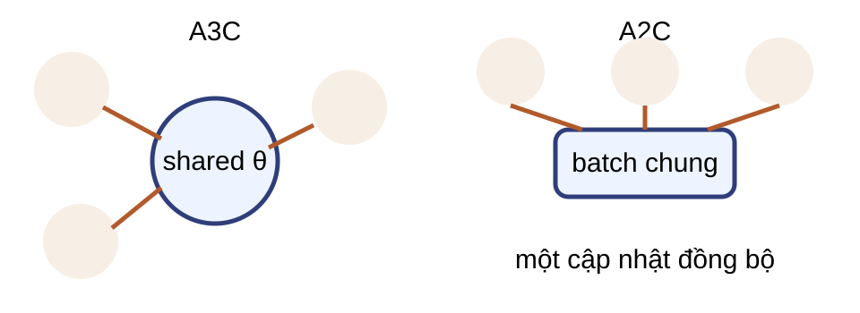
Worker có thể rollout bằng một bản tham số cũ. Gradient đến server ở các thời điểm khác nhau. Song song hóa giảm tương quan theo thời gian nhưng tạo staleness. A2C (actor–critic lợi thế đồng bộ) gom rollout Actor–critic lợi thế đồng bộ (Advantage Actor–Critic, A2C) ghép rollout của nhiều môi trường thành một batch trước cập nhật.
A3C A2C cập nhật bất đồng bộ đồng bộ gradient trễ có giảm trong một batch phần cứng worker độc lập vectorization thuận tiện
A2C không mặc nhiên tốt hơn A3C. Hai cách tổ chức đổi throughput, độ trễ và đặc tính batch; lựa chọn phụ thuộc hệ thống và môi trường. Tiếp theo mới đưa dữ liệu behavior khác target vào actor–critic.Nguồn: tr. 58; Mnih et al. (2016), biến thể đồng bộ phổ biến.
Replay tạo sai khác ở hai phân phối 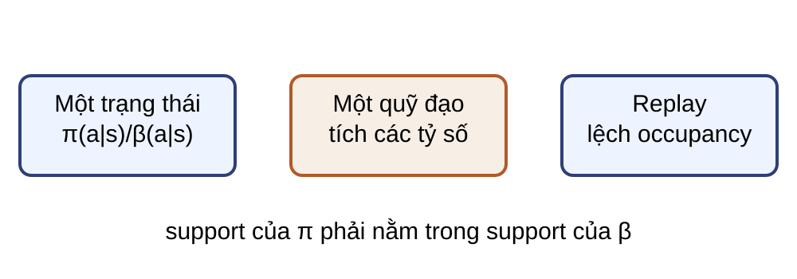
Behavior policy $\beta$ sinh dữ liệu; target policy $\pi$ là chính sách cần đánh giá hoặc cải thiện.
Tỷ số hành động sửa phân phối có điều kiện tại một trạng thái cố định. Nó không tự sửa phân bố trạng thái trong replay. Đây là điểm vào cho estimator khác chính sách và gradient policy tất định.Nguồn: tr. 52, 55–56; Degris, White & Sutton (2012).
Ví dụ trước, đồng nhất thức sau Lấy mẫu quan trọng (importance sampling, IS): với $\beta=(0{,}5,0{,}5)$, $\pi=(0{,}8,0{,}2)$ và $f=(2,0)$:
$$\mathbb E_\pi[f]=0{,}8\times2=1{,}6,$$ $$\mathbb E_\beta\!\left[\frac{\pi(A\mid s)}{\beta(A\mid s)}f(A)\right]=0{,}5\times1{,}6\times2+0{,}5\times0{,}4\times0=1{,}6.$$
Do đó, tại $s$ cố định và khi $\pi(a\mid s)>0\Rightarrow\beta(a\mid s)>0$, hai kỳ vọng bằng nhau.
Ví dụ tạo tỷ số 1,6 và 0,4 trước khi nêu identity tổng quát. Điều kiện support là bắt buộc; nếu beta không lấy mẫu một hành động mà pi dùng, tỷ số không thể khôi phục phần đó. Kết quả vẫn chỉ sửa phân phối hành động tại trạng thái cố định.Nguồn: tr. 55–56; Precup, Sutton & Singh (2000); ví dụ số bổ sung.
Ba bài toán khác chính sách không đồng nhất Quỹ đạo Tích tỷ số qua thời gian có thể tăng phương sai.
Replay actor–critic Target network không tự sửa occupancy mismatch.
Gradient tất định Định lý phải nêu rõ phân bố trạng thái.
Hành động liên tục cần gradient qua critic 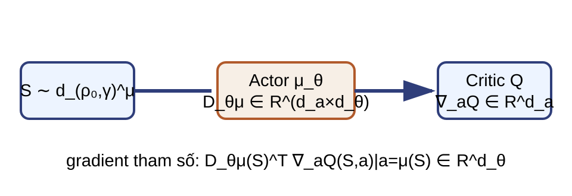
Gradient chính sách tất định (Deterministic Policy Gradient, DPG) dùng actor $\mu_\theta:\mathcal S\to\mathbb R^{d_a}$ và critic khả vi theo hành động.
Ví dụ vô hướng: $\mu_\theta(s)=2\theta$, $\partial_aQ(s,a)=3$ nên $\partial_\theta Q(s,\mu_\theta(s))=2\times3=6$.
Định lý DPG cần quy ước occupancy Với $D_\theta\mu_\theta(s)\in\mathbb R^{d_a\times d_\theta}$ và occupancy chuẩn hóa $d_{\rho_0,\gamma}^{\mu}(s)=(1-\gamma)\sum_{t\ge0}\gamma^t\Pr(S_t=s)$:
$$\nabla_\theta J(\theta)=\frac1{1-\gamma}\mathbb E_{S\sim d_{\rho_0,\gamma}^{\mu}}\!\left[D_\theta\mu_\theta(S)^\top\nabla_aQ^\mu(S,a)|_{a=\mu_\theta(S)}\right].$$
Replay tách policy hành vi khỏi target 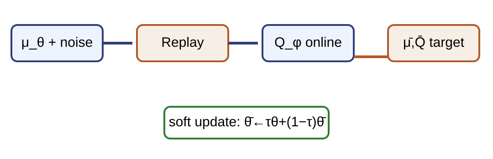
Gradient chính sách tất định sâu (Deep Deterministic Policy Gradient, DDPG) phải giải hai việc khác nhau:
Thu dữ liệu $A_t=\mu_\theta(S_t)+\zeta_t$ để khám phá.
Tạo target Dùng $\mu_{\bar\theta}$ không có behavior noise.
DDPG dùng surrogate trên trạng thái replay $$y=R_{t+1}+\gamma m_tQ_{\bar\phi}(S_{t+1},\mu_{\bar\theta}(S_{t+1})),\qquad \mathcal L_Q=\mathbb E_{\mathcal D}[(Q_\phi-\operatorname{sg}(y))^2],$$ $$g_\theta^{\mathcal D}=\mathbb E_{S\sim\mathcal D}\!\left[D_\theta\mu_\theta(S)^\top\nabla_aQ_\phi(S,a)|_{a=\mu_\theta(S)}\right],\quad D_\theta\mu\in\mathbb R^{d_a\times d_\theta}.$$
DDPG dùng bốn mạng và replay Lấy minibatch chuyển tiếp từ replay. Tính $y$ bằng hai mạng target. Cập nhật critic online theo bình phương sai số. Cập nhật actor online qua $Q_\phi$. Cập nhật mềm $\bar\theta\leftarrow\tau\theta+(1-\tau)\bar\theta$ và tương tự cho $\bar\phi$. D4PG: nhận dạng target phân phối 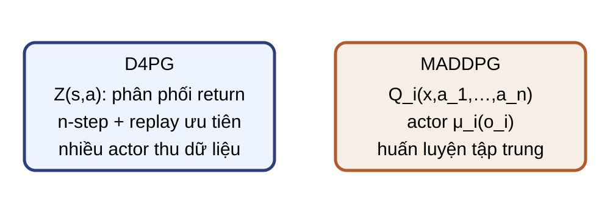
Distributed Distributional Deterministic Policy Gradients (D4PG) dùng target $n$ bước
$$Y_t=\sum_{k=0}^{n_t-1}\gamma^kR_{t+k+1}+\gamma^{n_t}b_tZ_{\bar\phi}(S_{t+n_t},\mu_{\bar\theta}(S_{t+n_t})).$$
Chiếu $\Pi Y_t$ lên support phân phối trước loss critic; mục tiêu học ở đây chỉ là nhận dạng cơ chế.
D4PG còn dùng actor phân tán và replay ưu tiên. Z mô tả phân phối return aleatoric, không phải bất định tham số. Phép chiếu phụ thuộc biểu diễn phân phối của critic; bài không yêu cầu triển khai projection.Nguồn: tr. 62, 64; Barth-Maron et al. (2018); sửa target và hạ phạm vi.
MADDPG (DDPG đa tác tử) dùng CTDE Multi-Agent DDPG (MADDPG) dùng huấn luyện tập trung, thực thi phân tán (CTDE): actor $i$ chỉ nhận $o_i$, critic dùng trạng thái chung $x$ và mọi hành động.
$$\nabla_{\theta_i}J_i\approx\mathbb E_{\mathcal D}\!\left[D_{\theta_i}\mu_i(o_i)^\top\nabla_{a_i}Q_i(x,a_1,\ldots,a_n)|_{a_i=\mu_i(o_i)}\right],$$ $$D_{\theta_i}\mu_i\in\mathbb R^{d_{a_i}\times d_{\theta_i}}.$$
Target MADDPG dùng mọi target actor $$y_i=R_{i,t+1}+\gamma m_tQ_{i,\bar\phi_i}\!\left(x',\mu_{1,\bar\theta_1}(o'_1),\ldots,\mu_{n,\bar\theta_n}(o'_n)\right).$$
Replay lưu thông tin chung cần cho critic. Mỗi actor chỉ nhận gradient qua thành phần hành động của mình. Target dùng bản target của mọi agent. D4PG và MADDPG sửa hai giới hạn khác nhau D4PG MADDPG giới hạn critic scalar và throughput agent khác làm môi trường đổi mở rộng return distribution, actor phân tán critic tập trung thực thi actor tất định actor cục bộ từng agent
Bài tập: off-policy và DDPG Kiểm support và tính ví dụ IS với $\beta=(0{,}5,0{,}5)$, $\pi=(0{,}8,0{,}2)$. Với $d_a=2,d_\theta=5$, ghi shape $D_\theta\mu$ và $D_\theta\mu^\top\nabla_aQ$. Tính target DDPG khi $R=1,\gamma=0{,}9,Q_{\bar\phi}=4$: một ca cutoff chưa terminal và một ca terminal. Support thỏa vì $\beta>0$ ở hai hành động; hai kỳ vọng bằng $1{,}6$.
$D_\theta\mu:[2,5]$; gradient tham số có shape $[5]$. Cutoff: $y=4{,}6$; terminal: $y=1$.
ACER: nhận dạng cắt tỷ số và bù phần dư 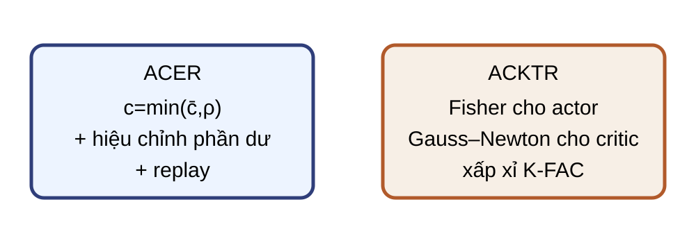
Actor-Critic with Experience Replay (ACER), với support $\pi(a\mid s)>0\Rightarrow\beta(a\mid s)>0$, đặt $u=\pi/\beta$, ngưỡng $\bar c>0$, $c=\min(\bar c,u)$:
$$\mathbb E_\beta[uf]=\mathbb E_\beta[cf]+\mathbb E_\pi\!\left[\left(1-\frac{\bar c}{u}\right)_+f\right].$$
f là hạng gradient hoặc tín hiệu cần hiệu chỉnh tại trạng thái cố định. Với mẫu beta có xác suất dương thì u được xác định; nếu viết biểu thức tại u bằng không, quy ước hạng correction bằng không theo miền positive-part. Đây chỉ là identity định hướng. Retrace và trust-region của ACER không được trình bày.Nguồn: tr. 65, 67; Wang et al. (2017); hạ phạm vi.
ACKTR: nhận dạng xấp xỉ Kronecker Actor Critic using Kronecker-Factored Trust Region (ACKTR) dùng lõi K-FAC theo từng layer:
$$F_{\mathrm{layer}}\approx K_{\mathrm{in}}\otimes K_{\mathrm{out}},\qquad (F_{\mathrm{layer}}+\eta I)^{-1}g.$$
Actor Metric Fisher của policy.
Critic Xấp xỉ Gauss–Newton.
ACER và ACKTR can thiệp ở hai chỗ ACER ACKTR dữ liệu replay khác chính sách rollout actor–critic cơ chế truncated IS + correction K-FAC curvature rủi ro chính phương sai, xấp xỉ correction chi phí và sai số curvature
SAC và TD3 sửa hai bài toán khác nhau Soft Actor–Critic (SAC) Đổi objective: actor stochastic tối ưu return cùng entropy.
Twin Delayed DDPG (TD3) Giảm lỗi critic/function approximation và overestimation của actor deterministic.
Cả hai có thể dùng twin critics và replay; entropy không phải cơ chế sửa target.
Phần giao là min hai critic 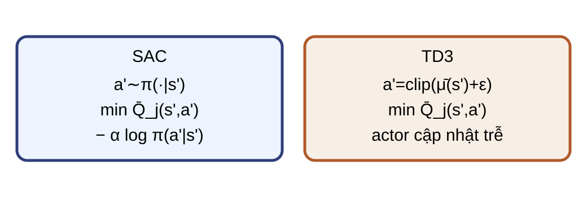
SAC Lấy mẫu từ policy; soft target trừ $\alpha\log\pi$.
TD3 Làm mượt target action; actor/target cập nhật trễ.
Hai target đều có thể lấy $\min(Q_1,Q_2)$, nhưng policy và objective khác nhau.
Entropy thuộc objective SAC, không phải target correction. Target smoothing thuộc TD3, không phải behavior noise. Trang sau chỉ dùng phép min chung để tính một target số trước khi tách công thức.Nguồn: tr. 68–71.
Hai critic cho target $4{,}6$ Cho $R=1$, $\gamma=0{,}9$, $m=1$; sau khi tạo hành động target, hai critic cho $4$ và $5{,}5$.
$$y=1+0{,}9\min(4,5{,}5)=4{,}6.$$
Nếu chuyển tiếp kết thúc thật, $m=0$ và target bằng $1$.
SAC hiện đại không cần mạng $V$ riêng $$A\prime\sim\pi_\theta(\cdot\mid S\prime),\quad y=R+\gamma m\left[\min_jQ_{\bar\phi_j}(S\prime,A\prime)-\alpha\log\pi_\theta(A\prime\mid S\prime)\right],$$ $$\mathcal L_\pi=\mathbb E\!\left[\alpha\log\pi_\theta(A\mid S)-\min_jQ_{\phi_j}(S,A)\right].$$
$\alpha>0$ cố định trong bài; actor stochastic dùng reparameterization.
Đây là biến thể SAC hiện đại không có mạng V riêng trong Haarnoja et al. 2018, Algorithms and Applications. Target critic detach; critic đứng yên trên đường actor. Automatic temperature tuning nằm ngoài phạm vi bài.Nguồn: tr. 68–69; Haarnoja et al. (2018), Soft Actor-Critic Algorithms and Applications .
TD3 phối hợp target, actor và lịch cập nhật $$\xi\sim\operatorname{clip}(\mathcal N(0,\sigma^2I),-c,c),\quad \widetilde A\prime=\operatorname{clip}(\mu_{\bar\theta}(S\prime)+\xi,a_{\min},a_{\max}),$$ $$y=R+\gamma m\min_jQ_{\bar\phi_j}(S\prime,\widetilde A\prime),\qquad J_\mu=\mathbb E_{\mathcal D}[Q_{\phi_1}(S,\mu_\theta(S))].$$
Cập nhật hai critic mỗi bước; cập nhật actor và các target mỗi $d$ bước critic.
Actor objective dùng critic thứ nhất Q1, không dùng min trong gradient actor. Behavior noise dùng để thu replay là đại lượng khác xi target smoothing. Sau noise Gaussian được clip, hành động còn được clip theo miền action.Nguồn: tr. 70–71; Fujimoto, van Hoof & Meger (2018).
SAC và TD3 khác ở policy lẫn khám phá SAC TD3 actor stochastic deterministic objective return + entropy return qua critic khám phá phân phối policy behavior noise bên ngoài target soft value, twin critics min twin critics + smoothing noise nhịp actor theo recipe SAC trì hoãn mỗi $d$ bước critic
SVPG: gradient return cộng lực đẩy 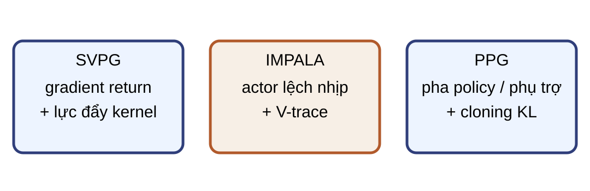
$$\Delta\theta_i=\frac1n\sum_{j=1}^n\left[k(\theta_j,\theta_i)\frac1\alpha\nabla_{\theta_j}J(\theta_j)+\nabla_{\theta_j}k(\theta_j,\theta_i)\right].$$
Stein Variational Policy Gradient (SVPG): particle đi lên return, kernel giữ đa dạng.
IMPALA nhận dạng qua V-trace Importance Weighted Actor-Learner Architectures (IMPALA): behavior $\mu$ ở actor, learner $\pi$; cần $\pi(a\mid s)>0\Rightarrow\mu(a\mid s)>0$.
$$u_t=\frac{\pi(A_t\mid S_t)}{\mu(A_t\mid S_t)},\quad \rho_t=\min(\bar\rho,u_t),\quad c_t=\min(\bar c,u_t),\quad \bar\rho\ge\bar c,$$ $$\delta_t=\rho_t[R_{t+1}+\gamma_tV(S_{t+1})-V(S_t)],\quad \gamma_t=\gamma m_t,$$ $$v_s=V(S_s)+\sum_{t=s}^{s+n-1}\left(\prod_{i=s}^{t-1}\gamma_i c_i\right)\delta_t.$$
PPG: pha phụ trợ giữ policy cũ cố định Phasic Policy Gradient (PPG) dùng value head phụ trợ trong mạng policy:
$$\mathcal L_{\mathrm{joint}}=\mathcal L_{\mathrm{aux}}+\beta_{\mathrm{clone}}\,\mathbb E[D_{\mathrm{KL}}(\pi_{\mathrm{old}}\|\pi_\theta)].$$
$\mathcal L_{\mathrm{aux}}$ huấn luyện value head; $\pi_{\mathrm{old}}$ trước pha và target value được đóng băng.
Ba phương pháp trả lời ba bài toán phương pháp bài toán cơ chế nhận dạng SVPG đa dạng policy gradient return + lực đẩy kernel IMPALA throughput và policy lag actors phân tán + V-trace PPG can nhiễu policy–value hai pha + cloning KL
Bản đồ nhiều thuộc tính họ dữ liệu actor cơ chế nhận dạng SPO/SAM/ACKTR/PPG rollout stochastic objective / độ cong / hai pha ACER/SAC replay stochastic correction / entropy DDPG/TD3 replay deterministic target / twin-delayed D4PG replay + actor phân tán deterministic return distribution MADDPG replay + joint info deterministic CTDE IMPALA actor phân tán, lag stochastic V-trace SVPG quần thể tùy policy kernel repulsion
Bài tập: tính target rồi chọn họ TD3 có $R=1,\gamma=0{,}9,m=1$, hai target critic $4$ và $5{,}5$: tính $y$. Continuous replay: chọn SAC hoặc TD3 và nêu tradeoff. Đa tác tử cần CTDE: chọn họ nào? Actor phân tán có policy lag: chọn cơ chế nào? $y=1+0{,}9\min(4,5{,}5)=4{,}6$.
SAC: stochastic + entropy; TD3: deterministic + behavior noise/delayed update.
MADDPG cho CTDE; IMPALA dùng V-trace cho policy lag.
Năm phép kiểm khi đọc một phương pháp mới Xác định behavior policy, target policy và support. Viết target critic, mặt nạ terminal và đại lượng dừng gradient. Viết actor gradient cùng miền và kích thước. Tách cơ chế lý thuyết khỏi lựa chọn triển khai. Giới hạn kết luận theo giả thiết và giao thức thực nghiệm. Chuyển ý kết: dùng checklist này thay cho suy luận từ tên thuật toán. Nguồn sơ cấp theo cụm: Mnih et al. (2016), A3C; Silver et al. (2014), DPG; Lillicrap et al. (2016), DDPG; Barth-Maron et al. (2018), D4PG; Lowe et al. (2017), MADDPG; Wang et al. (2017), ACER; Wu et al. (2017), ACKTR; Haarnoja et al. (2018), SAC; Fujimoto et al. (2018), TD3; Liu et al. (2017), SVPG; Espeholt et al. (2018), IMPALA; Cobbe et al. (2021), PPG.Nguồn: nguồn bài, tr. 44–78, và các bài sơ cấp liệt kê ở trên.